რუკის შედგენა (QGIS3)¶
ხშირად საჭიროა ისეთი რუკის შედგენა, რომელიც შეიძლება დაიბეჭდოს ან გამოქვეყნდეს. QGIS-ს აქვს შესანიშნავი ხელსაწყოების ნაკრები, რომელსაც ჰქვია Print Layout — მისი საშუალებით შეგიძლიათ დაამუშაოთ თქვენი GIS შრეები, გადააქციოთ ციფრულ და დასაბეჭდ რუკებად.
ამოცანის მიმოხილვა¶
პრაქტიკული მეცადინეობა აჩვენებს, როგორ შევადგინოთ იაპონიის რუკა სტანდარტული რუკის კომპოზიციის ელემენტებით, როგორიცაა ჩასმული რუკა, ბადეები, ჩრდილოეთის მაჩვენებელი ისარი, მასშტაბი და წარწერები.
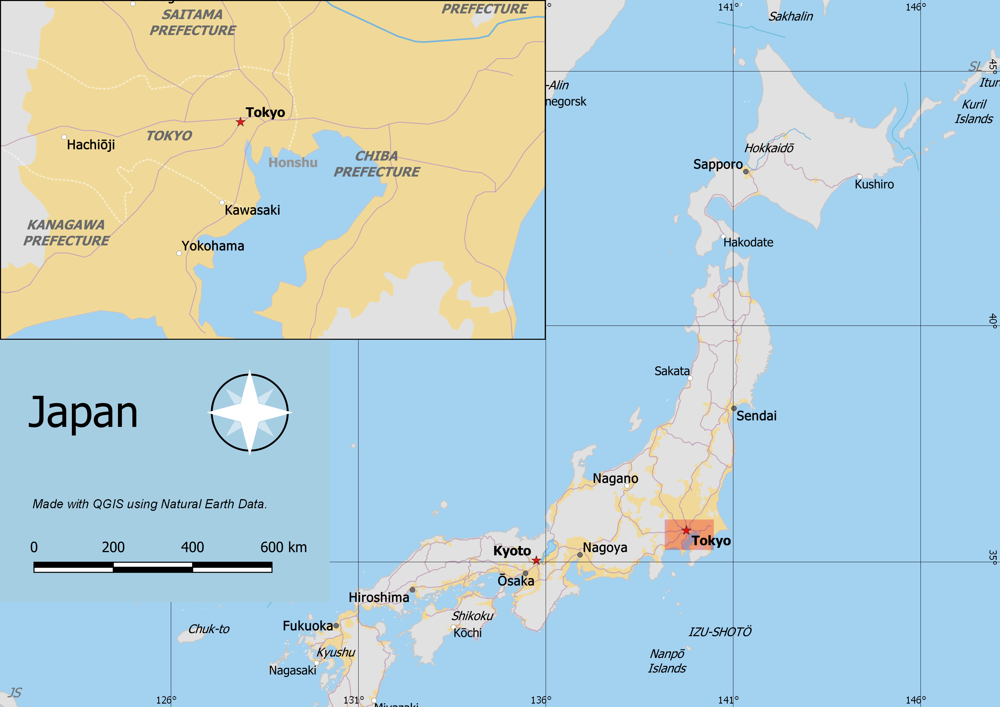
სხვა უნარები, რომლებსაც ისწავლით¶
როგორ ვნახოთ და შევცვალოთ QGIS პროექტის ცვლადები
როგორ გამოვიყენოთ QGIS "გამოსახულებები"
მონაცემების მიღება¶
ჩვენ გამოვიყენებთ Natural Earth მონაცემთა ნაკრებს - კერძოდ Natural Earth Quick Start Kit - ს, რომელსაც ახლავს გლობალური შრეები სტილით რაც შესაძლებელია პირდაპირ ჩაიტვირთოს QGIS - ში.
გადმოწერეთ Natural Earth Quickstart Kit. თუ გადმოსაწერი ბმული არ მუშაობს, გამოიყენეთ პირდაპირი ბმული Natural Earth Downloads გვერდიდან.
მონაცემთა პირველწყარო [NATURALEARTH]
მოქმედებათა თანმიმდევრობა¶
გადმოწერეთ და არქივიდან ამოიღეთ Natural Earth Quick Start Kit - ის მონაცემები. გახსენით QGIS. Browser ფანჯარაში მოძებნეთ
Natural Earth quick startსაქაღალდე, გაშალეთ და
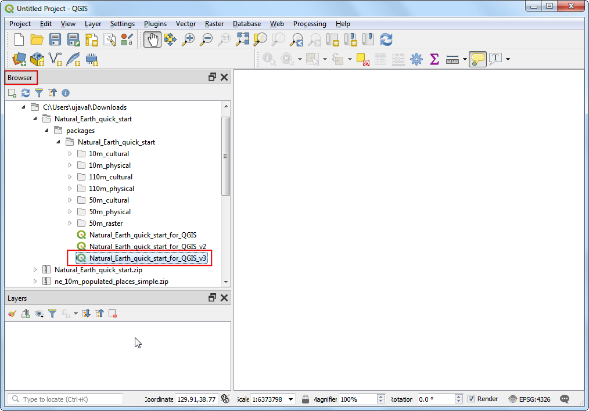
ნოტი
თუ გამოჩნდება დიალოგური ფანჯარა სახელწოდებით Handle Unavailable Layers, აწკაპეთ ღილაკს Auto-Find, შემდეგ კი Apply Changes, რათა გამოსწორდეს შეცდომა.
თუ თქვენი რუკა სასურველ ენაზეა, შეგიძლიათ პირდაპირ გადახვიდეთ მე-4 ნაბიჯზე.
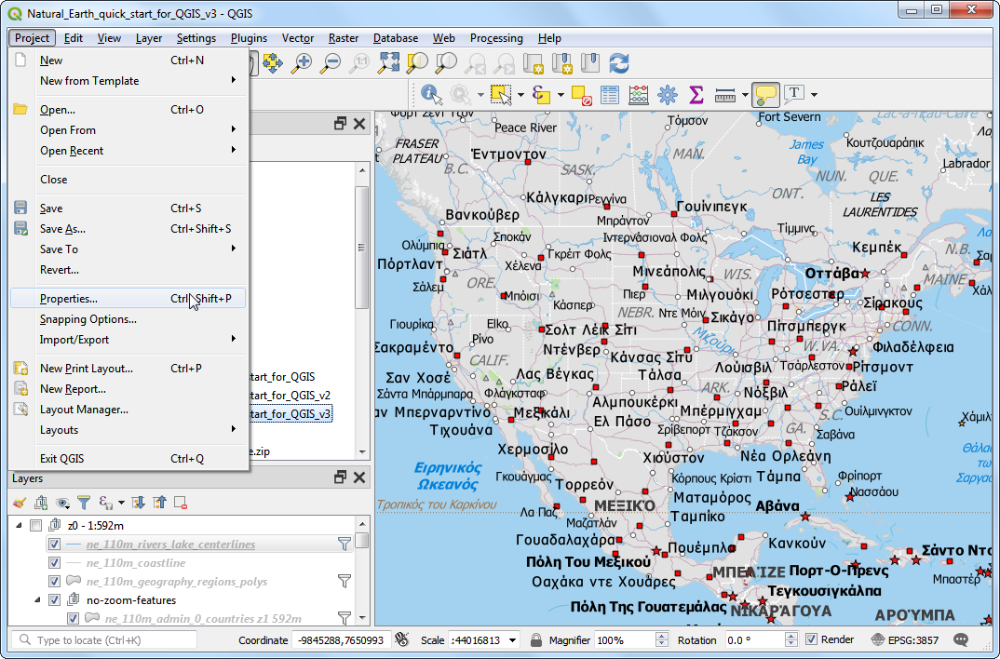
ნოტი
პროექტის ცვლადები საუკეთესო საშუალებაა პროექტის სპეციფიკური მნიშვნელობების შესანახად და გამოსაყენებლად ყველგან, სადაც QGIS-ში გამოსახულების (expression) გამოყენებაა შესაძლებელი. პროექტს Natural_Earth_quick_start_for_QGIS_v3 თან ახლავს მრავალი წინასწარ განსაზღვრული ცვლადი, რომლებიც ამავე პროექტში სტილის შესაქმნელად გამოიყენება.
გადართეთ :guilabel:Variables (ცვლადები) ჩანართზე :guilabel:Project Properties (პროექტის თვისებები) დიალოგურ ფანჯარაში. მოძებნეთ project_language ცვლადი და დააწკაპუნეთ :guilabel:Value (მნიშვნელობა) სვეტზე მის ჩასასწორებლად. შეცვალეთ ენა შემდეგზე: name_en და დააჭირეთ :guilabel:OK.
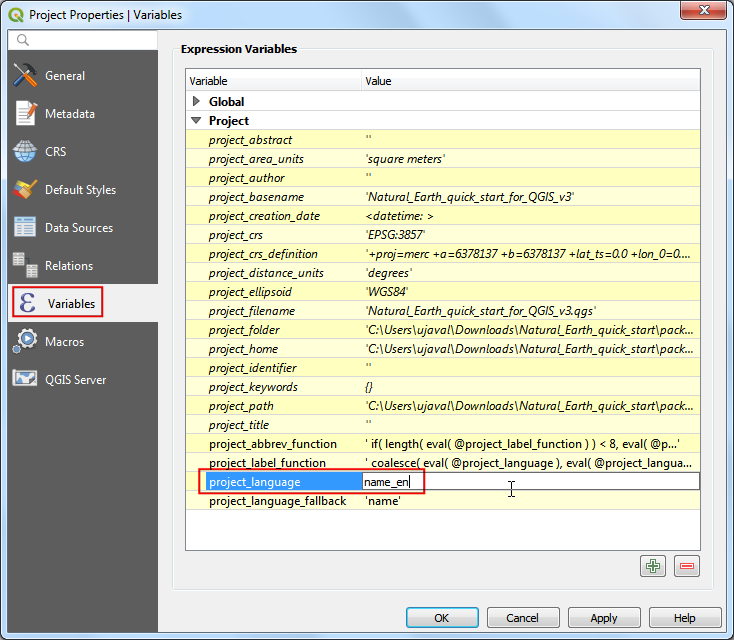
დაბრუნდით QGIS-ის მთავარ ფანჯარაში და დააჭირეთ ღილაკს :guilabel:Refresh (განახლება), რომელიც განთავსებულია :guilabel:Map Navigation Toolbar (რუკის ნავიგაციის პანელი) ზოლზე. ახლა რუკა ინგლისურენოვანი წარწერებით აისახება.
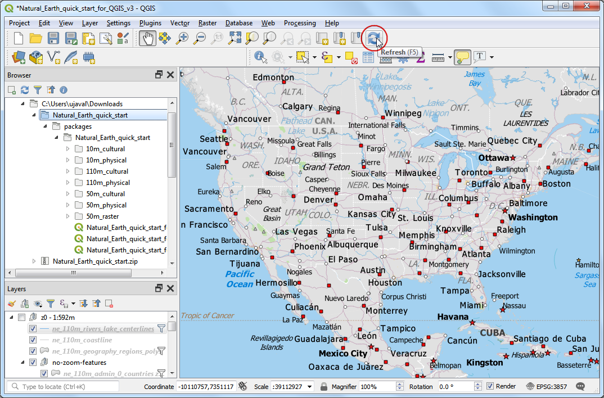
გამოიყენეთ გადაადგილებისა (Pan) და მასშტაბირების (Zoom) ღილაკები :guilabel:Map Navigation Toolbar (რუკის ნავიგაციის პანელი) ზოლზე და გადადით იაპონიის ხედზე.
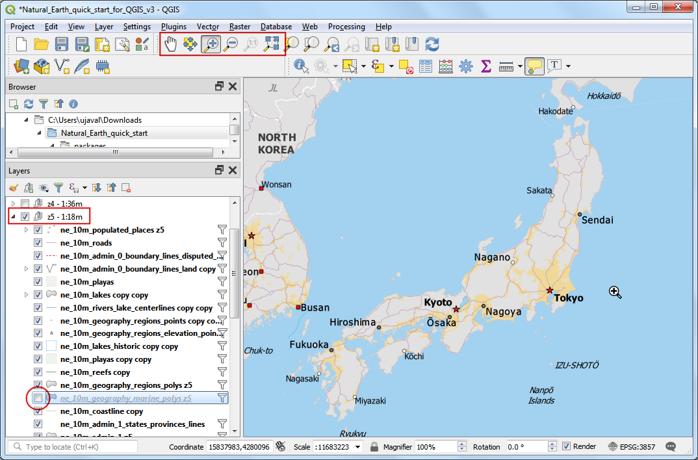
შეგიძლიათ გამორთოთ რუკის ზოგიერთი ფენა, რომლებიც ამ რუკისთვის არ გვჭირდება. გაშალეთ z5 - 1:18m საქაღალდე და მოხსენით მონიშვნა ne_10m_geography_marine_polys და ne_10m_admin_0_disputed_areas ფენების გასწვრივ. სანამ დასაბეჭდად გამოსადეგ რუკას მოვამზადებთ, საჭიროა შესაბამისი პროექციის შერჩევა. პროექტისთვის ნაგულისხმევი კოორდინატთა სისტემაა (CRS) EPSG:3857 Pseudo-Mercator. ეს სისტემა პოპულარულია ვებ-კარტოგრაფიაში და კარგი არჩევანია ჩვენი მიზნებისთვის, ამიტომ შეგვიძლია დავტოვოთ საწყის მნიშვნელობაზე. გადადით მენიუში :menuselection:Project --> New Print Layout.
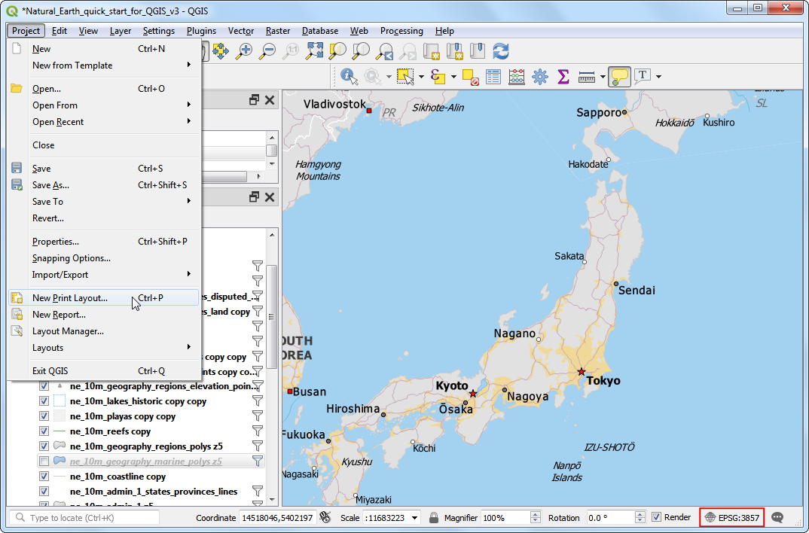
ნოტი
იაპონიისთვის Japan Plane Rectangular CS წარმოადგენს პროექციულ კოორდინატთა სისტემას (CRS), რომელიც შექმნილია დამახინჯებების მინიმუმამდე დასაყვანად. ის დაყოფილია 18 ზონად და თუ იაპონიის მცირე რეგიონზე მუშაობთ, ამ კოორდინატთა სისტემის გამოყენება უკეთესი იქნება.
თქვენ მოგეთხოვებათ განლაგების (layout) სათაურის შეყვანა. შეგიძლიათ დატოვოთ ის ცარიელი და დააჭიროთ ღილაკს Ok.
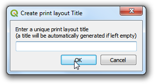
ნოტი
განლაგების(QGIS-ის ბეჭდვის მოდული) სახელის ველის ცარიელად დატოვების შემთხვევაში, მას მიენიჭება ნაგულისხმევი სახელი, როგორიცაა Layout 1.
ბეჭდვის განლაგების (Print Layout) ფანჯარაში დააჭირეთ ღილაკს Zoom full, რათა გამოჩნდეს განლაგების სრული არეალი.
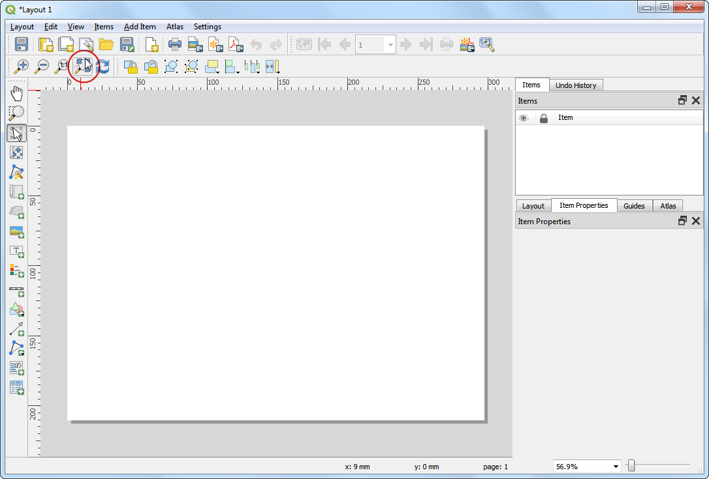
ახლა საჭიროა გადმოვიტანოთ რუკის ხედი, რომელსაც QGIS-ის მთავარ სამუშაო არეში (Canvas) ვხედავთ, განლაგების ფანჯარაში. გადადით მენიუში .
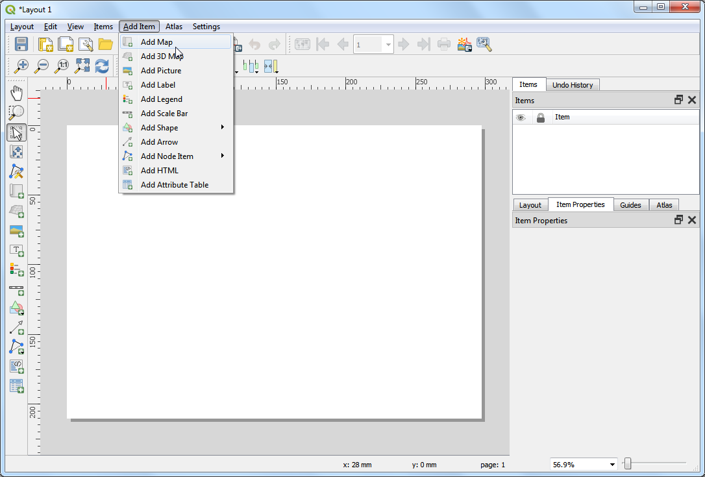
როგორც კი Add Map (რუკის დამატება) რეჟიმი გააქტიურდება, დააჭირეთ მაუსის მარცხენა ღილაკს და მართკუთხედად მოხაზეთ ის არეალი, სადაც გსურთ რუკის ჩასმა.
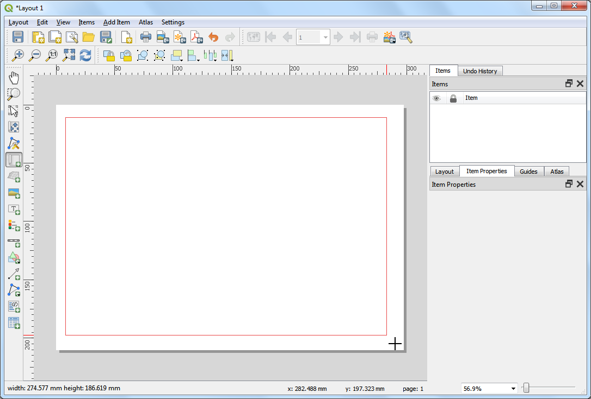
თქვენ დაინახავთ, რომ მართკუთხა ფანჯარაში აისახება QGIS-ის მთავარი სამუშაო არედან (Canvas) გადმოტანილი რუკა. შესაძლოა, რუკა სრულად არ ფარავდეს ჩვენთვის საინტერესო არეალს. გამოიყენეთ მენიუს პარამეტრები და , რათა გადააადგილოთ რუკა ფანჯრის შიგნით და განათავსოთ იგი ცენტრში.
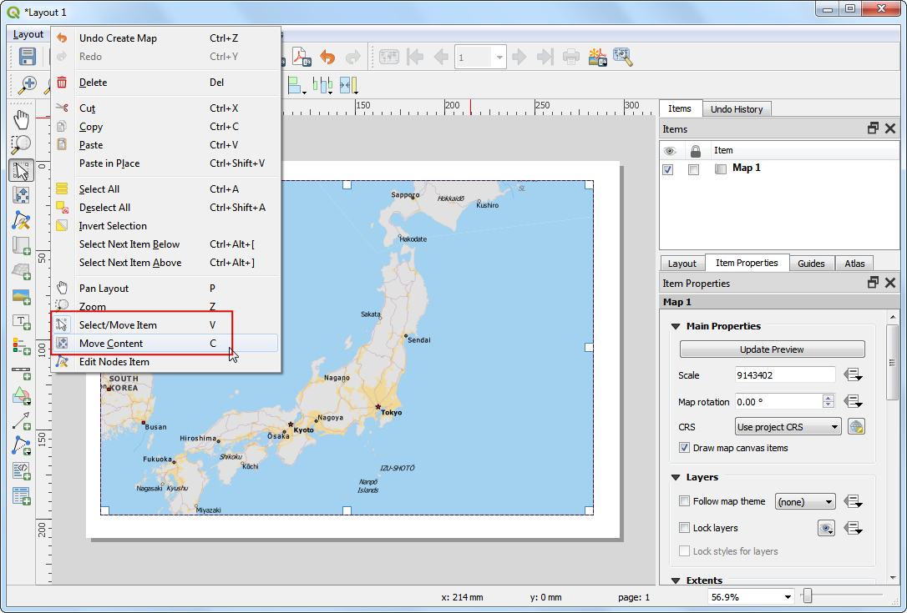
მოდით ასევე დავარეგულიროთ რუკის მასშტაბი. გადადით Item Properties (ელემენტის თვისებები) ჩანართზე და Scale (მასშტაბი) ველში შეიყვანეთ მნიშვნელობა 10000000.
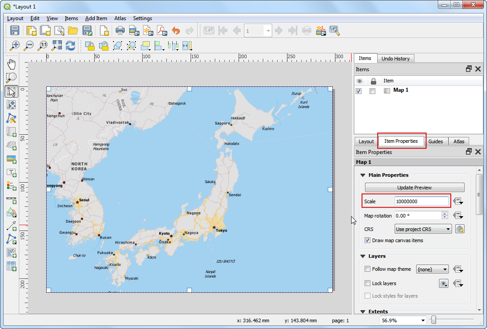
ახლა ჩვენ დავამატებთ რუკის ჩანართს (Inset), რომელიც აჩვენებს ტოკიოს არეალის მიახლოებულ ხედს. სანამ QGIS-ის მთავარ ფანჯარაში ფენებში რაიმე ცვლილებას შეიტანდეთ, მონიშნეთ Lock layers (ფენების ჩაკეტვა) და Lock styles for layers (ფენების სტილების ჩაკეტვა) უჯრები. ეს უზრუნველყოფს იმას, რომ ზოგიერთი ფენის გამორთვის ან მათი სტილის შეცვლის შემთხვევაში, ეს ხედი უცვლელი დარჩეს.
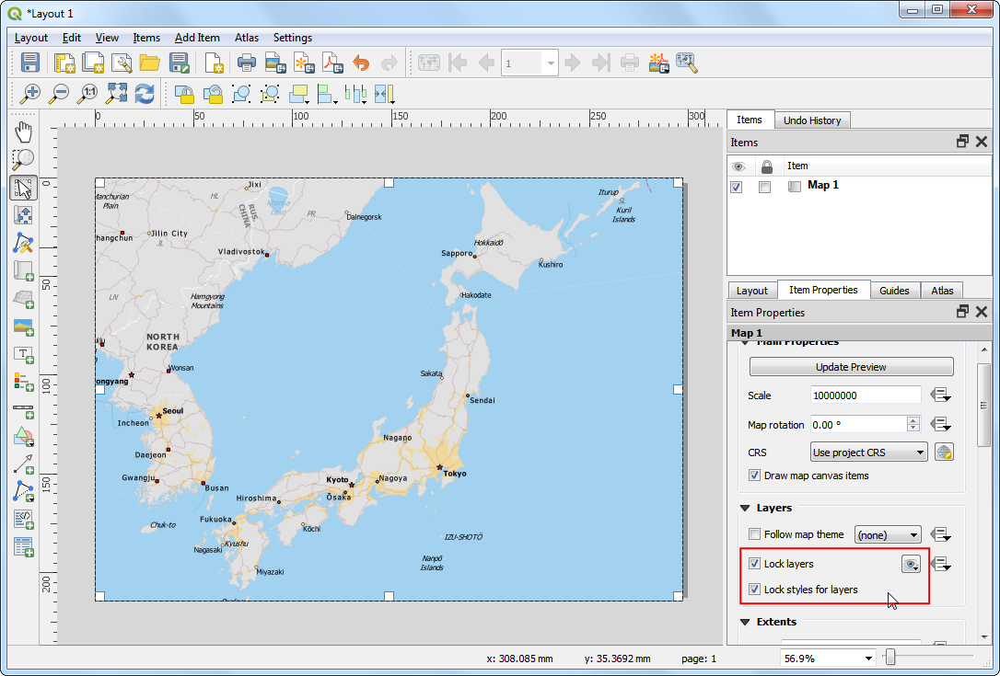
გადადით QGIS-ის მთავარ ფანჯარაში. გამორთეთ ფენების ჯგუფი
z5 - 1:18mდა გაააქტიურეთz7 - 1: 4mჯგუფი. ამ ფენების ჯგუფს აქვს სტილი, რომელიც უფრო მეტად შეესაბამება მიახლოებულ ხედს. გამოიყენეთ გადაადგილებისა (Pan) და მასშტაბირების (Zoom) ღილაკები Map Navigation Toolbar (რუკის ნავიგაციის პანელი) ზოლზე და მიუახლოვდით ტოკიოს არეალს.
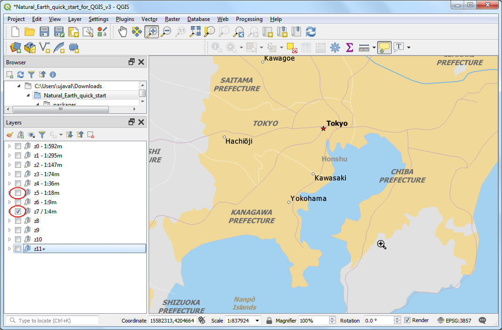
ახლა ჩვენ მზად ვართ რუკის ჩანართის (inset) დასამატებლად. გადადით Print Layout (ბეჭდვის განლაგება) ფანჯარაში. გადადით მენიუში .
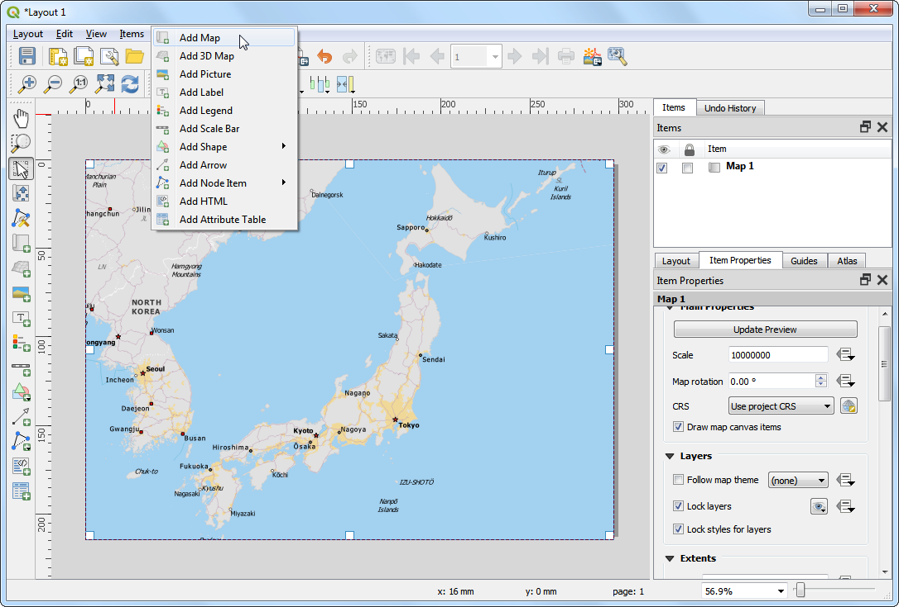
მოხაზეთ მართკუთხედი იმ ადგილას, სადაც გსურთ რუკის ჩანართის დამატება. თქვენ შეამჩნევთ, რომ ბეჭდვის განლაგებაში ახლა უკვე გვაქვს 2 რუკის ობიექტი. ცვლილებების შეტანისას დარწმუნდით, რომ სწორი რუკა გაქვთ არჩეული.
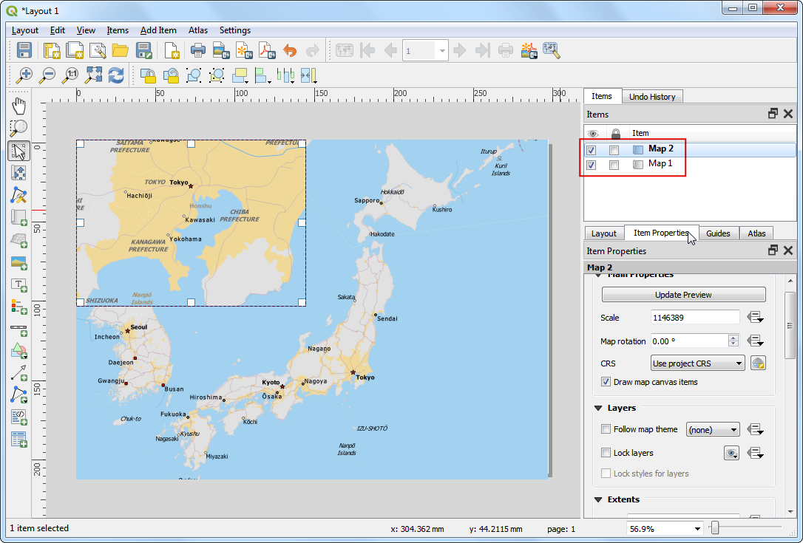
აირჩიეთ ახლახან დამატებული
Map 2ობიექტი Items (ელემენტები) პანელიდან. გადადით Item properties (ელემენტის თვისებები) ჩანართზე. ჩამოყევით Frame (ჩარჩო) პანელამდე და მონიშნეთ მის გასწვრივ არსებული უჯრა. თქვენ შეგიძლიათ შეცვალოთ ჩარჩოს საზღვრის ფერი და სისქე, რათა ის ადვილად გაირჩეს რუკის ფონისგან.
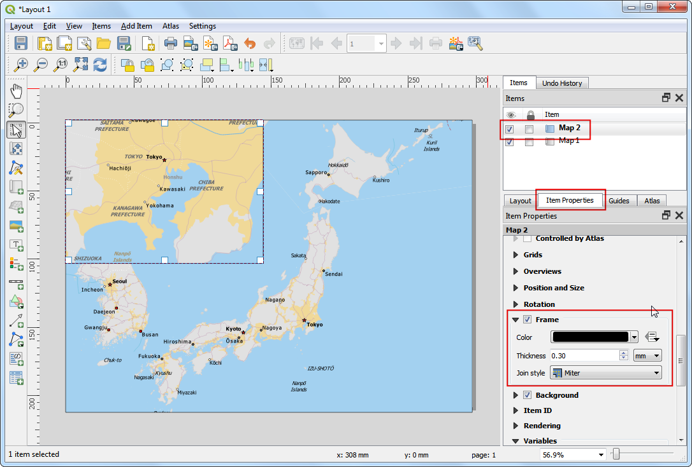
ბეჭდვის განლაგების ერთ-ერთი საუკეთესო ფუნქციაა ის, რომ მას შეუძლია ავტომატურად მონიშნოს მთავარ რუკაზე ის არეალი, რომელიც ასახულია ჩანართში. Items (ელემენტები) პანელიდან აირჩიეთ Map 1 ობიექტი. Item properties (ელემენტის თვისებები) ჩანართზე ჩამოყევით Overviews (მიმოხილვა) სექციამდე. დააჭირეთ Add a new overview (ახალი მიმოხილვის დამატება) ღილაკს.
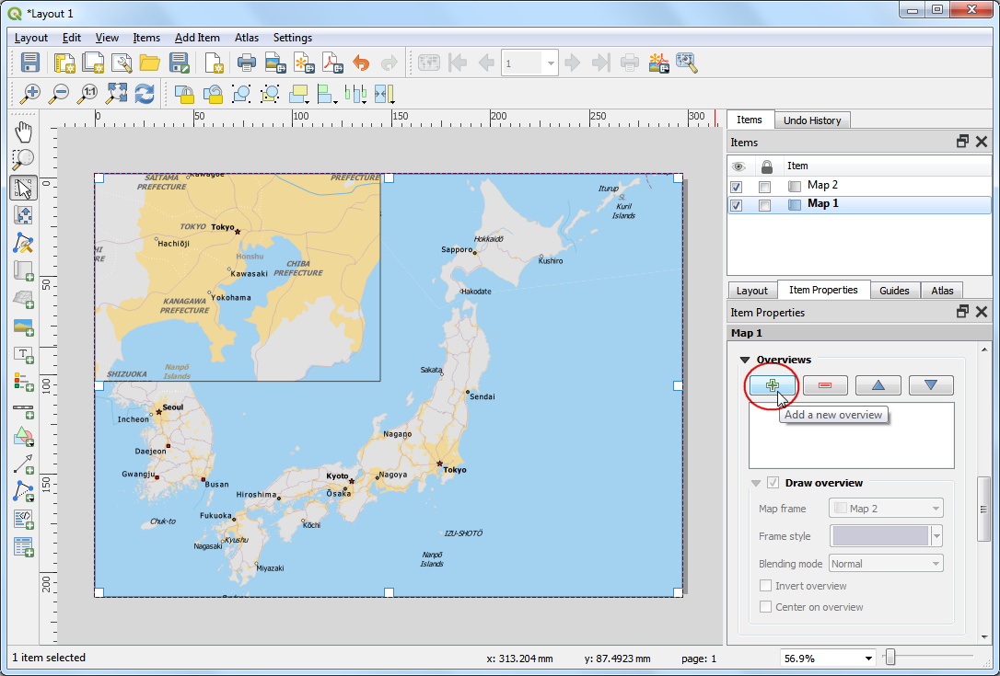
აირჩიეთ
Map 2როგორც Map Frame (რუკის ჩარჩო). ეს მიუთითებს ბეჭდვის განლაგებას, რომ მონიშნოს მიმდინარე ობიექტიMap 1იმ არეალით, რომელიც ასახულიაMap 2ობიექტში.
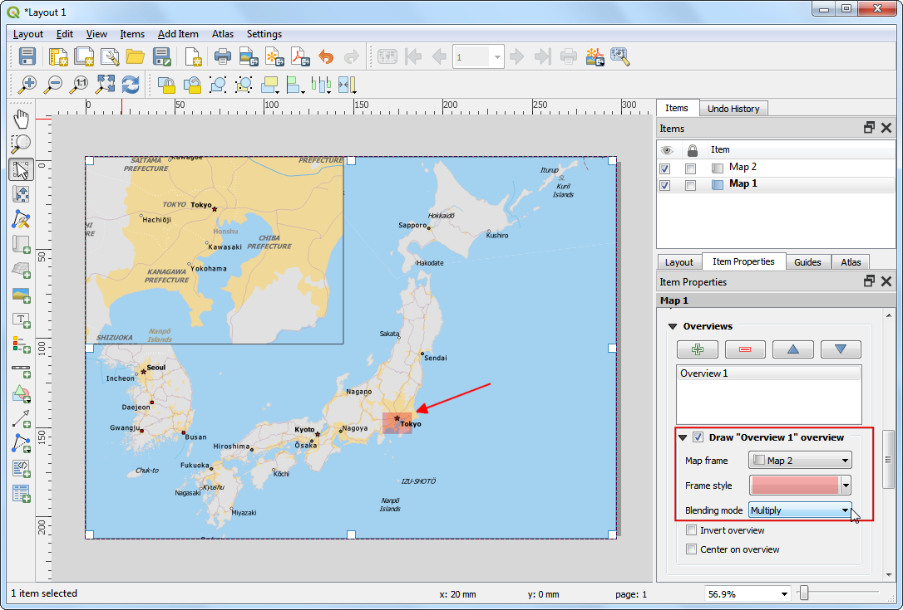
ახლა, როდესაც რუკის ჩანართი მზად არის, მთავარ რუკას დავამატებთ კოორდინატთა ბადეს. Items (ელემენტები) პანელიდან აირჩიეთ
Map 1ობიექტი. Item properties (ელემენტის თვისებები) ჩანართზე ჩამოყევით Grids (ბადეები) სექციამდე. დააჭირეთ ღილაკს Add a new grid (ახალი ბადის დამატება), შემდეგ კი — Modify grid... (ბადის შეცვლა...).
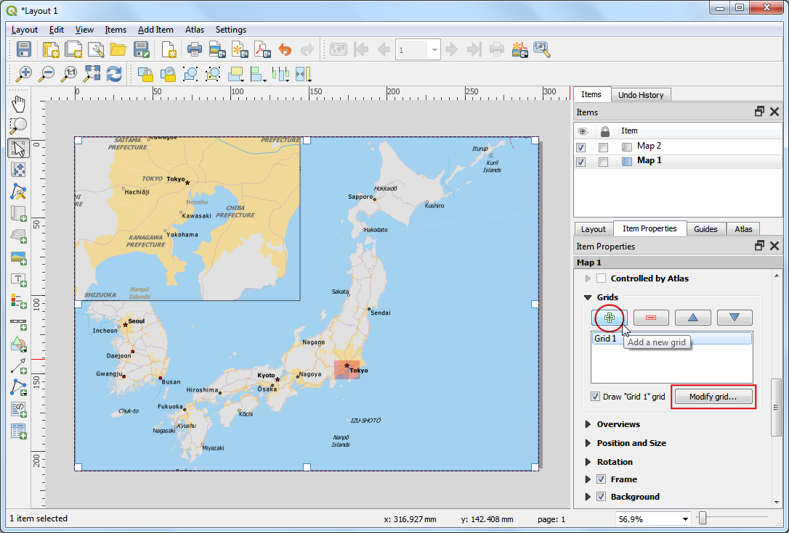
ნაგულისხმევად, ბადის ხაზები იყენებს იმავე ერთეულებსა და პროექციებს, რასაც მიმდინარე არჩეული რუკის პროექცია. თუმცა, ბადის ხაზების გრადუსებში ჩვენება უფრო მიღებული და სასარგებლოა. ჩვენ შეგვიძლია ბადისთვის სხვა საკოორდინატო სისტემა (CRS) ავირჩიოთ. დააჭირეთ Change... (შეცვლა...) ღილაკს, რომელიც CRS (საკოორდინატო სისტემა) ველის გვერდით მდებარეობს.
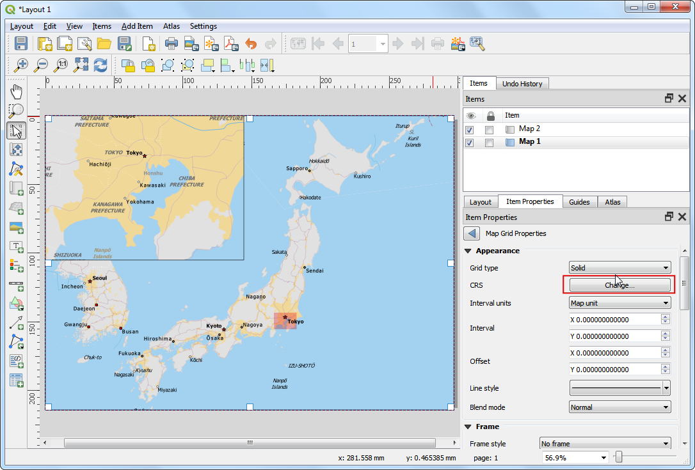
ფანჯარაში Coordinate Reference System Selector (საკოორდინატო სისტემის არჩევა), ჩაწერეთ
4326Filter (ფილტრი) ველში. შედეგებიდან აირჩიეთWGS 84 EPSG:4326, როგორც საკოორდინატო სისტემა (CRS). დააჭირეთ OK.
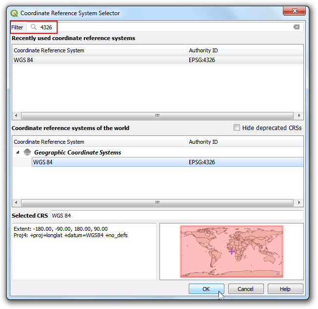
მიუთითეთ Interval (ინტერვალი) მნიშვნელობები
5გრადუსის ოდენობით როგორც X, ისე Y მიმართულებით. თქვენ შეგიძლიათ შეცვალოთ Offset (წანაცვლება), რათა დაარეგულიროთ ბადის ხაზების გამოჩენის ადგილი.
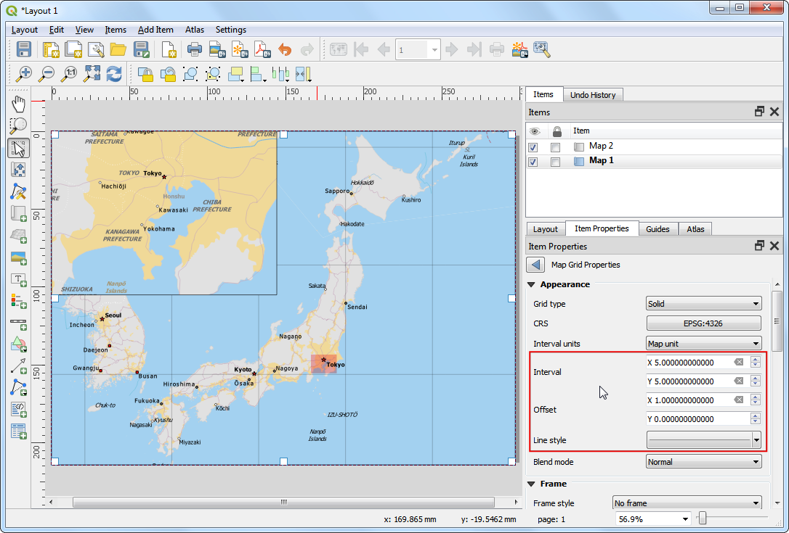
ჩამოყევით Grid frame (ბადის ჩარჩო) სექციამდე და მონიშნეთ Draw coordinates (კოორდინატების დახატვა) უჯრა. ნაგულისხმევი ფორმატია
Degrees(გრადუსები), თუმცა ის მხოლოდ რიცხვის სახით ჩანს. ჩვენ შეგვიძლია მისი მორგება ისე, რომ დაემატოს ° სიმბოლო. აირჩიეთCustom(მორგებული) და დააჭირეთ Expression (გამოსახულება) ღილაკს მის გვერდით.
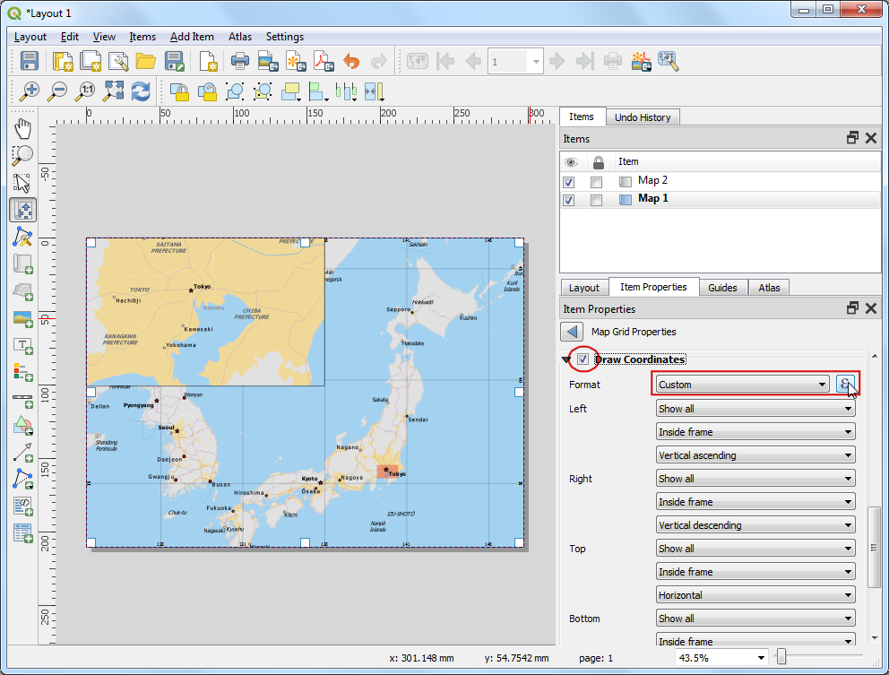
შეიყვანეთ შემდეგი გამოსახულება (Expression) იმ სტრიქონის შესაქმნელად, რომელიც აიღებს ბადის ნომერს და მიაწერს მას ° სიმბოლოს.
concat(to_string(@grid_number), '° ')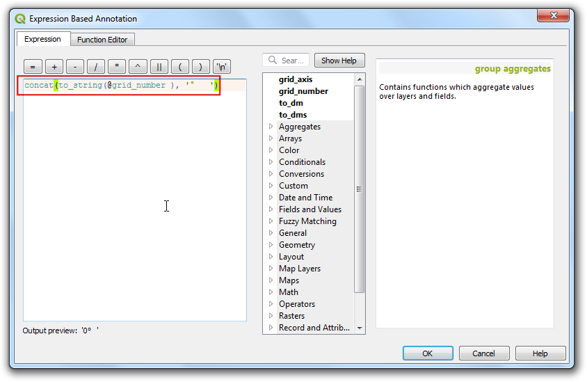
შეამჩნიეთ, რომ ბადეებს ახლა უკვე აქვს მორგებული წარწერები (Label), რომლებიც გამოსახულების (Expression) საშუალებით შეიქმნა. თქვენი სურვილისამებრ დაარეგულირეთ პოზიციის პარამეტრები მხარეებისთვის: Left (მარცხენა), Right (მარჯვენა), Top (ზედა) და Bottom (ქვედა).
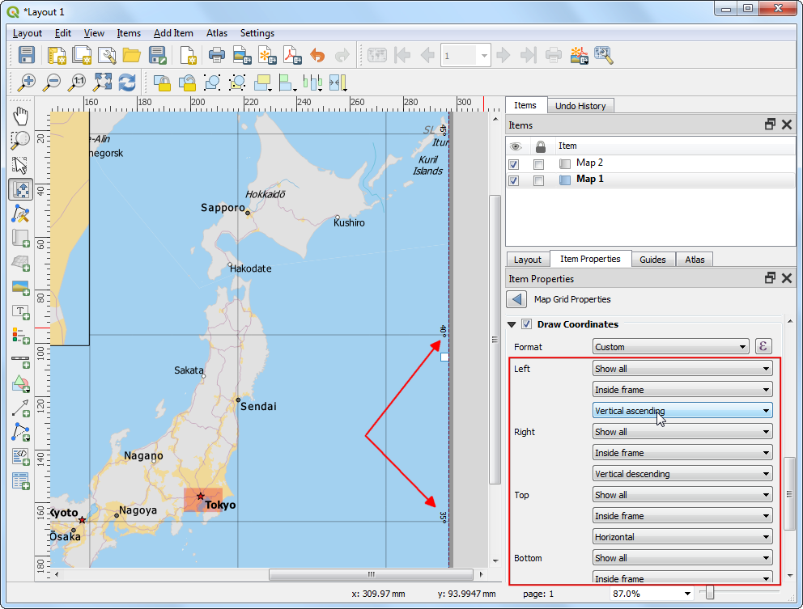
ახლა ჩვენ დავამატებთ მართკუთხა ჩარჩოს, რათა მასში მოვათავსოთ რუკის სხვა ელემენტები, როგორიცაა ჩრდილოეთის ისარი, მასშტაბი და წარწერა. გადადით მენიუში .
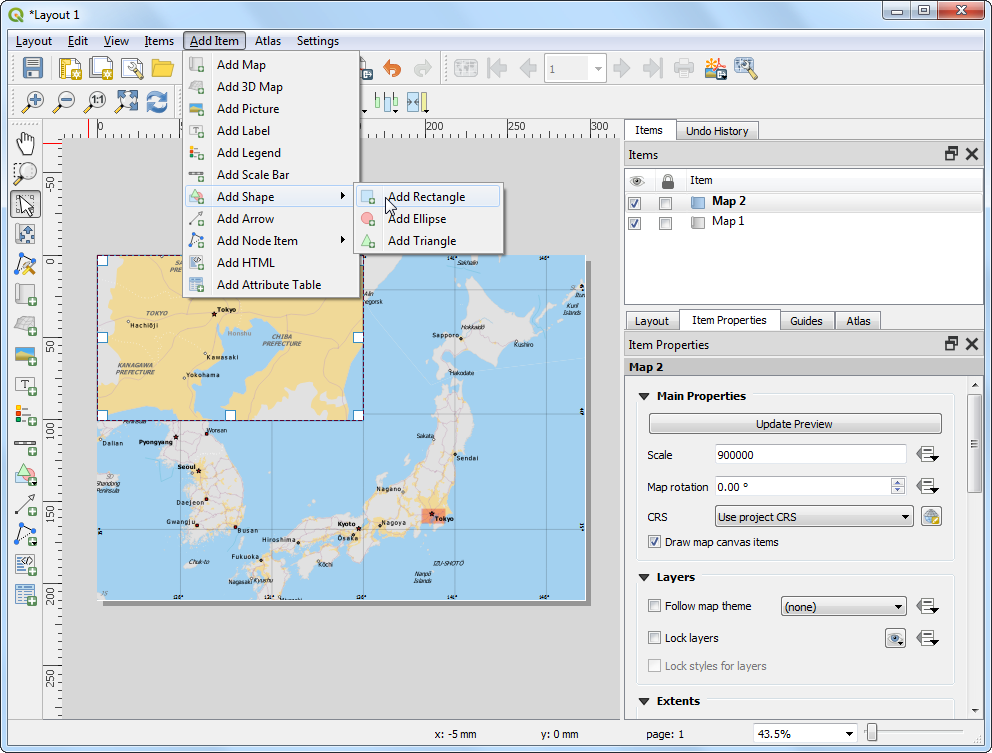
თქვენ შეგიძლიათ შეცვალოთ მართკუთხედის Style (სტილი), რათა ის შეესაბამებოდეს რუკის ფონს.
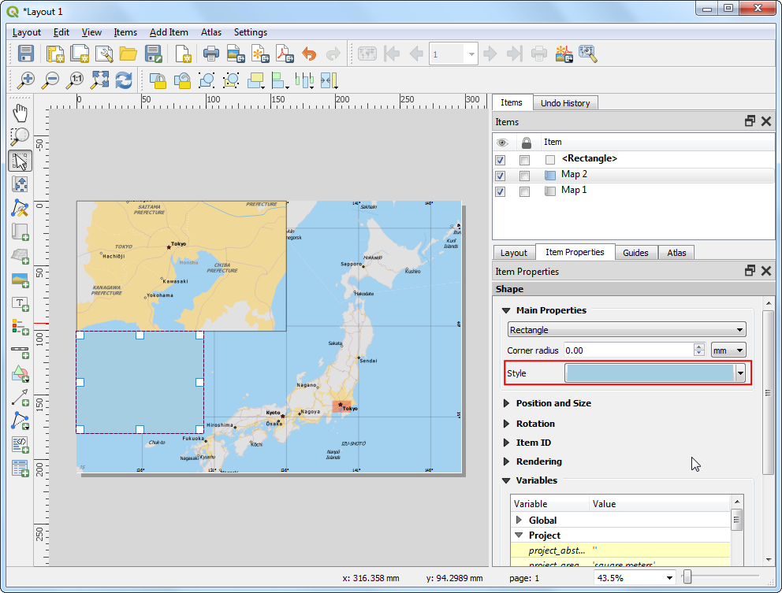
ახლა ჩვენ რუკას დავამატებთ ჩრდილოეთის ისარს. QGIS-ს მოყვება რუკასთან დაკავშირებული სურათების კარგი კოლექცია, მათ შორის მრავალი სახის ჩრდილოეთის ისარი. დააჭირეთ (ელემენტის დამატება --> სურათის დამატება).
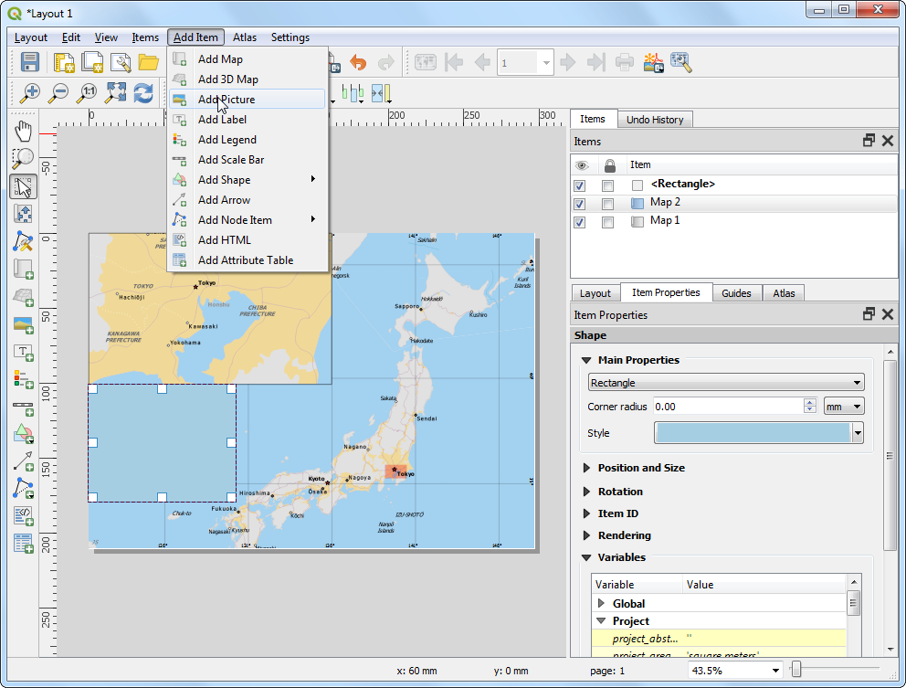
მაუსის მარცხენა ღილაკზე დაჭერით მოხაზეთ მართკუთხედი. მარჯვენა პანელზე დააჭირეთ Item Properties (ელემენტის თვისებები) ჩანართს, აირჩიეთ SVG image (SVG გამოსახულება) სექცია და ჩამოყევით ქვემოთ, რათა იპოვოთ arrows (ისრები) SVG Groups (SVG ჯგუფები) ჩამონათვალში. აირჩიეთ თქვენთვის სასურველი გამოსახულება.
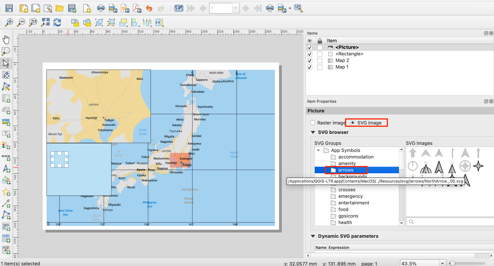
ახლა ჩვენ დავამატებთ მასშტაბის ხაზს. დააჭირეთ (ელემენტის დამატება --> მასშტაბის ხაზის დამატება).
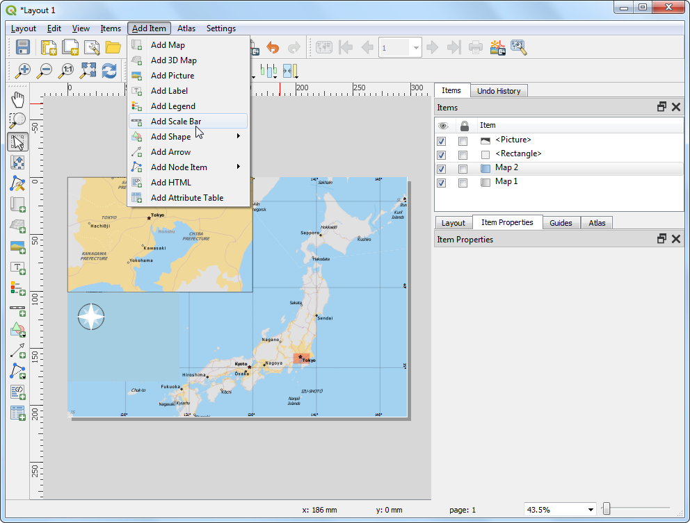
დააწკაპუნეთ განლაგებაზე იმ ადგილას, სადაც გსურთ მასშტაბის ხაზის გამოჩენა. Item Properties (ელემენტის თვისებები) ჩანართზე დარწმუნდით, რომ აირჩიეთ სწორი რუკის ელემენტი
Map 1, რომლისთვისაც გსურთ მასშტაბის ჩვენება. შეარჩიეთ თქვენს მოთხოვნებთან შესაბამისი სტილი (Style). Segments (მონაკვეთები ) პანელში შეცვალეთ Fixed width (ფიქსირებული სიგანე) 200 ერთეულამდე და დაარეგულირეთ მონაკვეთები თქვენი სურვილისამებრ.
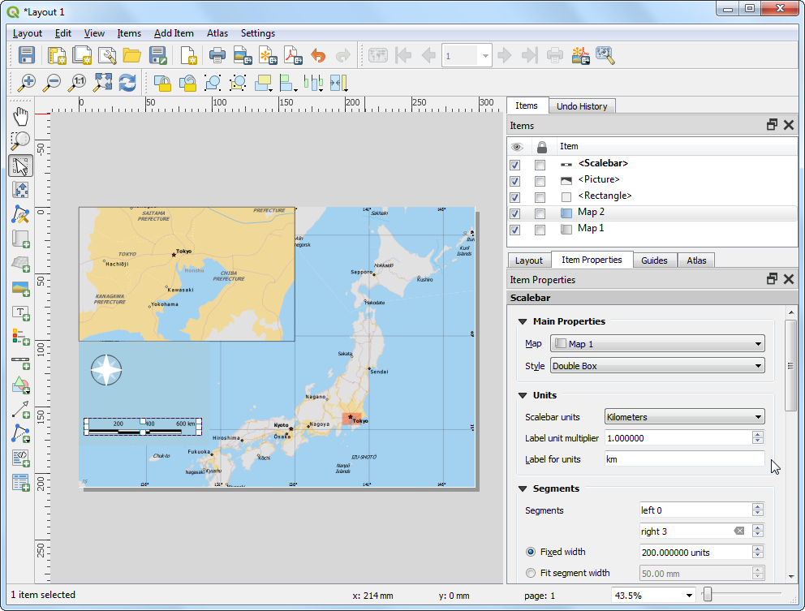
დადგა დრო, რომ დავაწეროთ ჩვენს რუკას. დააჭირეთ (ელემენტის დამატება --> წარწერის დამატება).
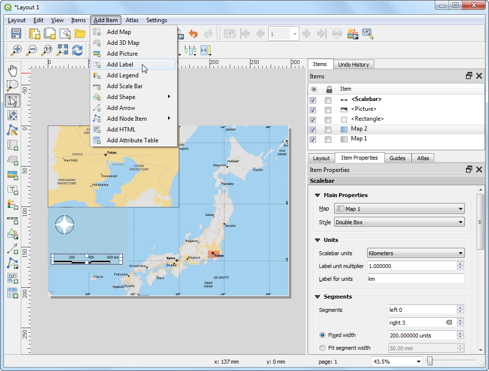
დააწკაპუნეთ რუკაზე და მოხაზეთ ჩარჩო იმ ადგილას, სადაც წარწერა უნდა განთავსდეს. Item Properties (ელემენტის თვისებები) ჩანართზე გაშალეთ Label (წარწერა) სექცია და შეიყვანეთ რუკის დასახელება. ანალოგიურად, დაამატეთ სხვა წარწერები მონაცემთა წყაროებისა და პროგრამული უზრუნველყოფის მითითებისთვის.
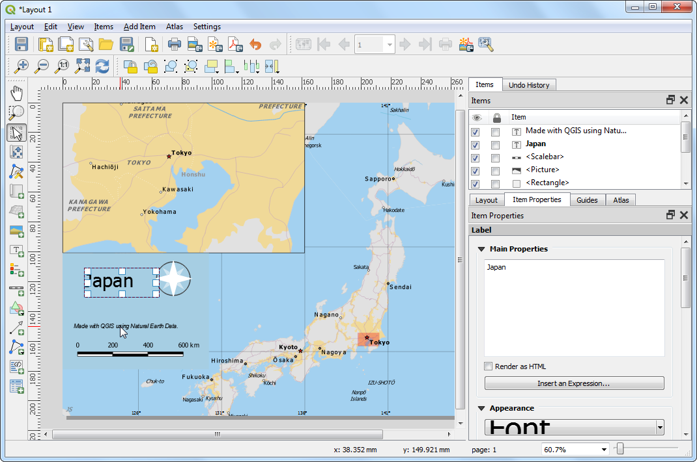
როგორც კი რუკის სახით კმაყოფილი დარჩებით, შეგიძლიათ მისი ექსპორტირება სურათის, PDF ან SVG ფორმატში. ამ სახელმძღვანელოსთვის, მოდით, მოვახდინოთ მისი ექსპორტირება სურათად. დააჭირეთ (განლაგება --> ექსპორტირება სურათად).
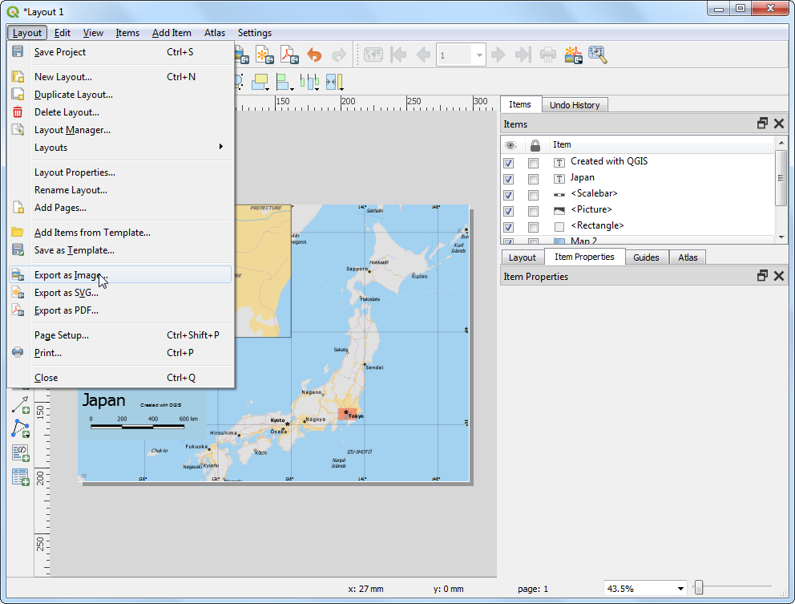
შეინახეთ გამოსახულება თქვენთვის სასურველ ფორმატში. ქვემოთ მოცემულია ექსპორტირებული PNG სურათი.
If you want to give feedback or share your experience with this tutorial, please comment below. (requires GitHub account)